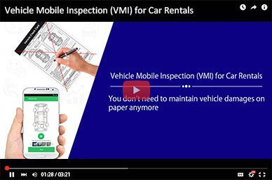

Get Started Now
Vehicle Mobile Inspection (VMI) for Car Rentals

You don’t need to maintain vehicle damages on paper anymore



Home
»
Vehicle Mobile Inspection (VMI) | Vehicle Inspection App
»
Vehicle Mobile Inspection (VMI) for Car Rentals
Vehicle Mobile Inspection (VMI) for Car Rentals
Vehicle Mobile Inspection (VMI) For Car Rentals
Vehicle Mobile Inspection (VMI) for Car Rentals is a specialized version of Vehicle Mobile Inspection (VMI) to automate below processes of car rentals:
You don’t need to maintain vehicle damages on paper anymore
Don’t you feel it is outdated to record vehicle damages on paper? Is it not time consuming? Always you need to mark same vehicle damages for each vehicle checkout & check-in transaction. Always you need to compare the checkout & check-in sheets for finding the new damages.
Eliminate customer disputes on vehicle damages
There will be almost no dispute as every damage will be recorded along with pictures electronically & acknowledged by customer by electronic signature at the end of each checkout & checkin movement.
Decrease Your Vehicle Maintenance Cost
Don’t pay for the repair of damages which can be recovered from customer.
Increase Your Sales by not missing the invoicing of any Vehicle Damage
Are you charging every vehicle damage? There are chances that you are missing some damages which can be charged to customer.
Decrease Your Customer Wait Time
Don’t let your customer to wait for each checkout & check-in movement. All the vehicle damages will be available from last movement on checkout & checkin screens. So there is no need to mark the vehicle damages from scratch on each checkout & checkin movement which you have to do in manual paper-based process. It really decreases customer waiting time.
Increase Your Staff Productivity
Do you want your staff to be more productive? Don’t let their time to be wasted on manual checkout & check-in procedure.
Protect Your Cars from Bad Drivers
Vehicle Mobile Inspection (VMI) will help you to easily identify bad drivers who damage your rental cars. You can block them to open new rental agreement in future.
Let’s get you Started
If you want to know more about Vehicle Mobile Inspection (VMI), let’s get connected.